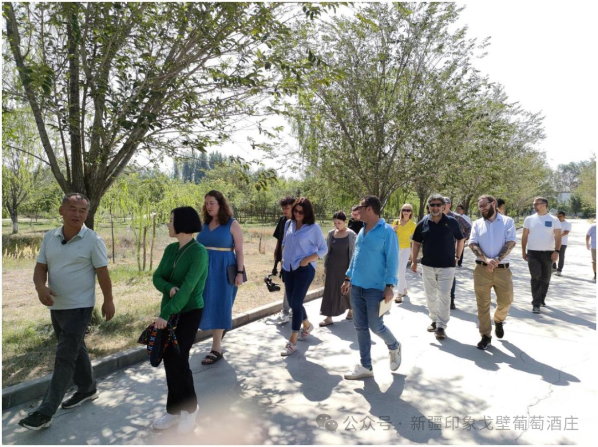

〇二 / 年份
一条短时间线。
只写要紧的日期。不编传说。
2014
公司成立
昌吉市印象戈壁葡萄酒庄有限责任公司。法定代表人富强。基地在昌吉市三工镇——天山北麓小产区。
2014–2018
园成，窖开
种植赤霞珠、梅洛、西拉、马瑟兰、黑皮诺及部分白葡萄。第一批认真装瓶站稳脚跟。2018 年赤霞珠—梅洛—西拉后获 Decanter 世界葡萄酒大赛铜奖——草本、胡椒、结构单宁。
2016 起
有机之路
干燥气候意味着更少喷药。关键地块推进有机认证并保持下去。这不是潮流故事，是这片地本来的样子。
2022
法国，三金
春季法国国际赛事送出三款酒，全部获金。对从未听过昌吉的人，这是有用的证明。

2024
IWSC 亚洲评委到访
国际葡萄酒与烈酒大赛评委走进酒庄、走地、品酒。对真正以品鉴为业的人，门始终开着。

今天
庄园 · 开门
自有葡萄园、酒窖，以及一点接待。首席酿酒师李振东主掌技术。仍是先种地，后说话。